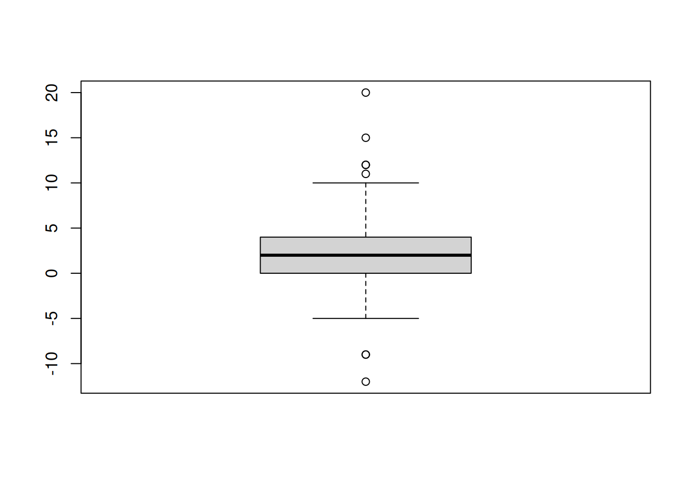
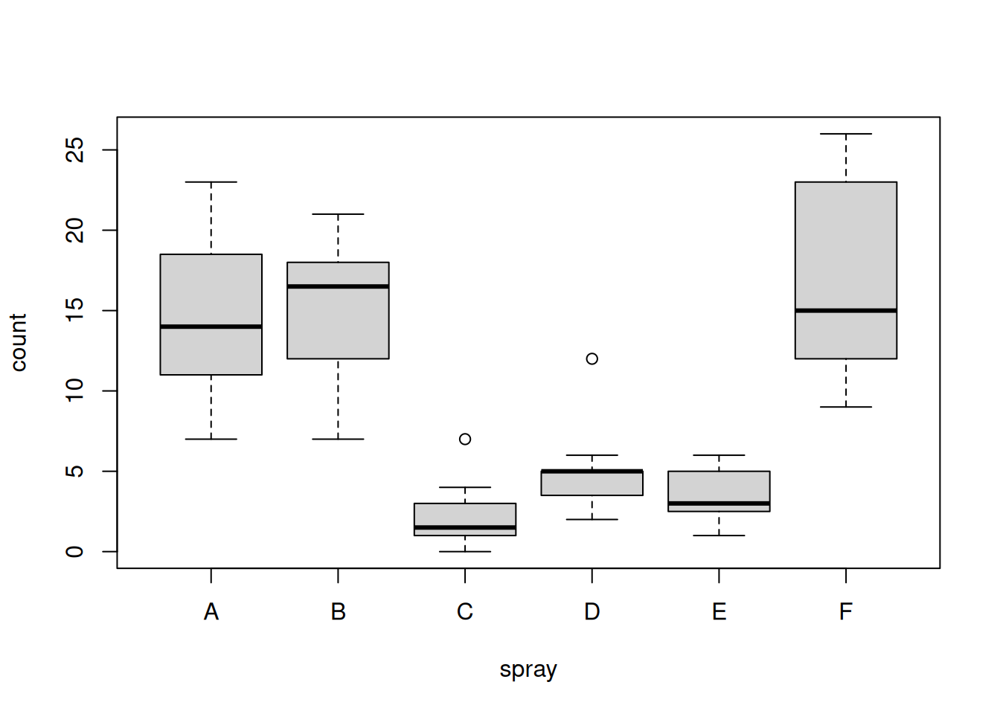
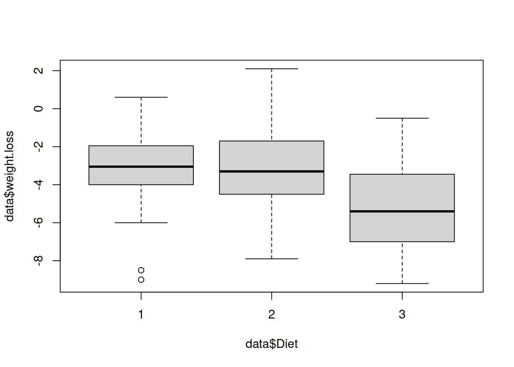

# Define vectors
winner <- c(193, 183, 191, 185, 185, 182, 182, 188, 188, 188, 185, 185, 177,
182, 182, 193, 183, 179, 179, 175)
opponent <- c(163, 191, 165, 187, 175, 193, 185, 187, 188, 173, 180, 177, 183,
185, 180, 180, 182, 178, 178, 173)Classical and Bayesian Statistics - Exercises
Problems 1
a
It seems that, in total, the Allied and Axis countries had about the same number of civilian deaths. However, if we compare the numbers per party member, we see that the Axis countries had a higher average amount of deaths. On the other hand, the data from the Allies is inconsistent (see Denmark).
b
The percentages in the chart do not sum up to 100%.
c
I
We can assume that Linda is a bank teller and is active in the feminist movement. Her experiences from the past could have influenced her behavior and thinking on certain topics. She may have a sense for justice and equality, regardless of the topic.
II
We can assume that Steve is a librarian because of his helpful personality and his need for order and structure, much like what’s found in a library. His passion for details may also be connected to a desire for knowledge.
III
A Ball costs $0.05.
IV
There are more death by heart diseases than accidents.
d
Since the engine is the only thing that keeps a plane in the air, it makes sense for it to be more armoured than the rest of the plane. Even if other parts have more bullet holes on average (e.g. the fuselage), the plane could still fly.
Problem 1.2
a
# Determine length
cat("Length of vector winners =", length(winner), "\n") # Add line breakLength of vector winners = 20 cat("Length of vector opponent =", length(opponent))Length of vector opponent = 20b
cat("Entries 6 to 10 =",winner[6:10]) # Index starts at 1Entries 6 to 10 = 182 182 188 188 188c
cat("Some values from winner:", winner[c(3, 5, 10, 12)]) # Passing a vector for selectionSome values from winner: 191 185 188 185d
cat("Current values:",winner[c(8, 9)], "\n") # Check valuesCurrent values: 188 188 winner[c(8, 9)] <- 189 # Reassign
cat("New values:", winner[c(8, 9)]) # Check valuesNew values: 189 189e
mu_winner <- mean(winner)
mu_opponent <- mean(opponent)
cat("Mean higth of winner vs. opponent:", mu_winner, "vs.", mu_opponent)Mean higth of winner vs. opponent: 184.35 vs. 180.15f
mu_diff <- mu_winner - mu_opponent
cat("Differences between means =", mu_diff)Differences between means = 4.2g
var_winner <- var(winner)
sd_winner <- sd(winner)
cat("Variance / Std. deviation of winner:", var_winner, "/", sd_winner)Variance / Std. deviation of winner: 25.08158 / 5.008151h
my_variance <- function(data){
mu <- mean(data)
sum_of_squares <- sum((data - mu)^2)
variance <- sum_of_squares / (length(data) - 1)
return(variance)
}
my_stdDeviation <- function(variance){
stdDevition <- sqrt(variance)
return(stdDevition)
}
my_var_winner <- my_variance(winner)
my_sd_winner <- my_stdDeviation(my_var_winner)
cat("Variance of Winner =", my_var_winner, "\n") # Add line breakVariance of Winner = 25.08158 cat("Variance of Winner =", my_sd_winner)Variance of Winner = 5.008151Problem 1.3
grades <- c(4.2, 2.3, 5.6, 4.5, 4.8, 3.9, 5.9, 2.4, 5.9, 6, 4, 3.7, 5, 5.2, 4.5, 3.6, 5, 6, 2.8, 3.3, 5.5, 4.2, 4.9, 5.1)
grades <- sort(grades) # Sort values
original_mu <- mean(grades)
originla_meadian <- median(grades)
grades[9:11] <- 1 # Reassign values
new_mu <- mean(grades)
new_median <- median(grades)
cat("Original vs. New mean:", original_mu, "vs.", new_mu, "\n") # Add line breakOriginal vs. New mean: 4.5125 vs. 4.1 cat("Median stays the same:", originla_meadian, "=", new_median)Median stays the same: 4.65 = 4.65Problems 2
Probmel 2.1
a
# Read data
data <- read.csv('/home/nils/dev/mscids-notes/hs25/sa/data/husband_wife.csv')
head(data) age.husband height.husband age.wife height.wife
1 49 180 43 159
2 25 184 28 156
3 40 165 30 162
4 52 177 57 154
5 58 161 52 142
6 32 169 27 166b
summary(data) age.husband height.husband age.wife height.wife
Min. :20.00 Min. :155.0 Min. :18.00 Min. :141.0
1st Qu.:33.00 1st Qu.:169.0 1st Qu.:32.00 1st Qu.:156.0
Median :43.50 Median :172.0 Median :41.00 Median :160.0
Mean :42.92 Mean :172.8 Mean :40.68 Mean :160.3
3rd Qu.:53.00 3rd Qu.:177.0 3rd Qu.:50.00 3rd Qu.:165.0
Max. :64.00 Max. :190.0 Max. :64.00 Max. :176.0 For each column, we see a brief summary with quantitative and qualitative information about the data.
c
age_diff <- data$age.husband - data$age.wife # Calc age difference
boxplot(age_diff)
d
- The median of age_diff is about 2.5. On average, the age difference between husbands and wives is around 2.5 years.
- 50% of the differences lie between approximately 0 and 5 years.
- There are more upper than lower outliers, meaning that extreme cases where the husband is much older than the wife occur more frequently.
- In addition, the values of the upper outliers are larger than those of the lower ones.
Problem 2.2
head(InsectSprays) # Preview data from head count spray
1 10 A
2 7 A
3 20 A
4 14 A
5 14 A
6 12 Aa
tapply(InsectSprays$count, InsectSprays$spray, mean) A B C D E F
14.500000 15.333333 2.083333 4.916667 3.500000 16.666667 b
boxplot(count ~ spray,
data = InsectSprays)
Problem 2.3
data <- read.csv('/home/nils/dev/mscids-notes/hs25/sa/data/Diet.csv')
head(data) Person gender Age Height pre.weight Diet weight6weeks
1 25 NA 41 171 60 2 60.0
2 26 NA 32 174 103 2 103.0
3 1 0 22 159 58 1 54.2
4 2 0 46 192 60 1 54.0
5 3 0 55 170 64 1 63.3
6 4 0 33 171 64 1 61.1# Add column weight.los
data$weight.loss <- data$weight6weeks - data$pre.weight
data$weight.loss [1] 0.0 0.0 -3.8 -6.0 -0.7 -2.9 -2.8 -2.0 -2.0 -8.5 -1.9 -3.1 -1.5 -3.0 -3.6
[16] -0.9 2.1 -2.0 -1.7 -4.3 -7.0 -0.6 -2.7 -3.6 -3.0 -2.0 -4.2 -4.7 -3.3 0.5
[31] -7.0 -5.6 -3.4 -6.8 -7.8 -5.4 -6.8 -7.2 -7.0 -7.3 -0.9 -7.6 -4.1 -6.3 -5.0
[46] 0.6 -1.1 -4.5 -4.1 -9.0 -2.4 -3.9 -3.5 -5.1 -3.5 -4.2 -2.4 -5.8 -3.5 -5.3
[61] -1.7 -5.4 -6.1 -7.9 1.4 -4.3 -2.5 -0.9 -3.5 -0.5 -2.8 -8.6 -4.5 -2.8 -4.1
[76] -5.3 -9.2 -6.1tapply(data$weight.loss, data$Diet, mean) 1 2 3
-3.300000 -3.025926 -5.148148 According to the data, diet 3 appears to have the greatest effect on weight loss over the 6-week therapy period. Diets 1 and 2 show more or less the same effect, although patients following diet 2 lost slightly less weight on average.
boxplot(data$weight.loss ~ data$Diet)
- Even though diet 3 appears to have the greatest effect according to the median, it also has the largest interquartile range (IQR) among the three diets.
- Diet 2 shows the greatest overall spread across the entire boxplot
- Diet 1 is influenced by several lower outliers.
Problem 2.4
a
The probabilities of ‘heads’ and ‘tails’ do not add up to 1.
b
The calculated probability is negative. That’s not possible by definition.
c
The union of the quantities S and M cannot be 0.7, because men cannot be pregnant.
Problem 2.5
a
Sample space of the experiment:
\[ \Omega = \{ (i, j) \mid i, j \in \{1,2,3,4,5,6\} \} \]
b
\[ p(\omega_n) = \dfrac{1}{36} = 0.02\bar{7} \]
c
Events, where the sum is 7:
\[ E_1 = {(1, 6), (2, 5), (3, 4)} \]
Note: Since there are two dices, we can multiply the number of favourable results by 2.
Now, we can calculate the probability:
\[ p(E_1) = \dfrac{6}{36} = 0.1\bar{6} \]
d
\[ E_2 = {(1, 1), (1, 2), (2, 1)} \]
\[ p(E_2) = \dfrac{3}{36} = 0.08\bar{3} \]
e
\[ E_3 = \{ (i, j) \mid i, j \in \{1,3,5\} \} \]
\[ p(E_3) = \dfrac{9}{36} = 0.25 \]
f
p_e2 <- 3/36
p_e3 <- 9/36
p_intersection <- 1/36
p_annual <- p_e2 + p_e3 - p_intersection
print(p_annual)[1] 0.3055556Problem 2.6
p_A <- 3/4
p_B <- 2/3a
p_bothEvents <- p_A * p_B
print(p_bothEvents)[1] 0.5b
p_atLeastOne <- p_A + p_B - p_A * p_B
print(p_atLeastOne)[1] 0.9166667c
p_atMostOne <- 1 - p_A * p_B
cat(p_atMostOne)0.5d
p_noEvent <- 1 - (p_A + p_B - p_A * p_B)
print(p_noEvent)[1] 0.08333333e
p_exactlyOneEvent <- p_A + p_B - 2 * p_A * p_B
print(p_exactlyOneEvent)[1] 0.4166667Problem 2.7
p_earthquake <- 0.04
p_typhoon <- 0.08
p_annual <- p_earthquake + p_typhoon - p_earthquake * p_typhoon
print(p_annual)[1] 0.1168Problems 3
Problem 3.1
\[ p_2 = 1 - 0.3 - 0.1 - 0.2 - 0.3 = 0.1 \]
Problem 3.2
a
The probabilities in the table sum to one, so it is a probability distribution.
\[ \sum P(X = k) = 1 \]
b
\[ p(2 \le k \le 4) = 0.2 + 0.2 + 0.1 = 0.5 \]
c
\[ p(k \gt 2) = 0.2 + 0.1 + 0.1 = 0.4 \]
d
\[ p(k \le 4) = 1 - 0.1 = 0.9 \]
e
\[ p(k \gt 1) = 1 - 0.4 = 0.6 \]
Problem 3.3
a
\[ p(k \le 13) = 0.992 \]
b
\[ p(k \ge 10) = 1 - 0.939 = 0.061 \]
c
\[ p(k = 15) = 1 - 0.999 = 0.001 \]
d
\[ p(9 \le k \le 12) = 0.989 - 0.711 = 0.282 \]
Problem 3.4
a
\[ \Omega = \{\text{TTT}, \text{TTH}, \text{THT}, \text{HTT}, \text{THH}, \text{HTH}, \text{HHT}, \text{HHH}\} \] \[ P(X = 0) = \frac{1}{8} \] \[ P(X = 1) = \frac{3}{8} \] \[ P(X = 2) = \frac{3}{8} \] \[ P(X = 3) = \frac{1}{8} \]
b
\[ p(x = 2) = \frac{3}{8} \]
c
\[ p(X \ge 2) = \frac{3}{8} + \frac{1}{8} = \frac{1}{2} \]
d
\[ p(X \le 1) = \frac{1}{8} + \frac{3}{8} = \frac{1}{2} \]
Problem 3.5
x_k <- c(-5, -4, 1, 3, 6)
p <- c(0.3, 0.1, 0.2, 0.3)
p_k <- 1 - sum(p) # Calc p_k
cat("Probability of -4 =", p_k, "\n")Probability of -4 = 0.1 p <- c(0.3, p_k, 0.1, 0.2, 0.3) # Reassign p
mu <- sum(x_k * p) # Calc expected value
mu[1] 0.6Problem 3.6
a
\[ p(x) = \frac{1}{6} + \frac{1}{6} = \frac{1}{3} \]
b
x <- 2:12 # Sum of eyes
p <- c(1, 2, 3, 4, 5, 6, 5, 4, 3, 2, 1) / 36 # Probability of summed eyes
mu = sum(x * p)
mu[1] 7var = sum((x - mu)**2 * p)
var[1] 5.833333sd = sqrt(var)
sd[1] 2.415229Problems 4
Problem 4.2
# Define distr. paras
mu <- 4
sd <- 1.25a
# Assume normal distr.
pnorm(q = 2.5, mean = mu, sd = sd)[1] 0.1150697b
1 - pnorm(q = 5.0, mean = mu, sd = sd)[1] 0.2118554c
pnorm(q = 4.5, mean = mu, sd = sd) - pnorm(q = 3.0, mean = mu, sd = sd)[1] 0.4435663d
qnorm(0.98, mean=mu, sd=sd)[1] 6.567186Problem 4.3
# Define distr. paras
mu <- 2.2
sd <- 0.3
# Assume normal distr.
1 - pnorm(q=3.1, mean=mu, sd=sd/sqrt(100))[1] 0Problem 4.4
# Define distr. paras
mu <- 8.2
sd <- 6.0a
# Assume normal distr.
pnorm(q=10.0, mean=mu, sd=sd/sqrt(36))[1] 0.9640697b
pnorm(q=10.0, mean=mu, sd=sd/sqrt(36)) - pnorm(q=5.0, mean=mu, sd=sd/sqrt(36))[1] 0.9633825c
1- pnorm(q=20.0, mean=mu, sd=sd/sqrt(36))[1] 0d
It’s small, but not impossible. We also assume a normal distribution. The real distribution probability may differ from the normal distribution. We also use a very small sample size of 36.
e
Yes, the i.i.d. assumption holds here because each of the 36 passengers is an individual who is independent of the others.
Problem 4.5
# Define distr. paras
mu <- 77
sd <- 15
course_1 <- 25
course_2 <- 64a
# Assume normal distr.
pnorm(q=82, mean=mu, sd=sd/sqrt(course_1)) - pnorm(q=72, mean=mu, sd=sd/sqrt(course_1))[1] 0.9044193b
pnorm(q=82, mean=mu, sd=sd/sqrt(course_2)) - pnorm(q=72, mean=mu, sd=sd/sqrt(course_2))[1] 0.9923392For a larger group, the probability is more likely to be at the mean compared to a smaller group (CLT).
Problems 5
Problem 5.1
- \(H_0\): \(\mu = \mu_0 = 70\)
- \(H_A\): \(\mu \lt 70\)
Rejection range:
data <- c(71, 69, 67, 68, 73, 72, 71, 71, 68, 72, 69, 72)
sd <- 1.5
mu_hat <- mean(data)
qnorm(p = 0.05, mean = 70, sd = 1.5/sqrt(12))[1] 69.28776Test:
pnorm(q = mu_hat, mean = 70, sd = 1.5 / sqrt(12))[1] 0.7181486We do not reject the null hypothesis.
- p-value: 0.718
The mean of the sample does not statistical deviate from the producers claimed mean.
Problem 5.2
a
- \(H_0\): \(\mu = \mu_0 = 50\)
- \(H_A\): \(\mu \lt 50\)
data <- c(46, 48, 52, 49, 46, 51, 52, 47, 49, 44, 48, 51, 49, 50, 53, 47)
sd <- 3.0
mu_hat <- mean(data)
pnorm(q = mu_hat, mean = 50, sd = 3.0/sqrt(16))[1] 0.0668072We do not reject the null hypothesis.
- p-value: 0.0668072
b
data <- c(46, 48, 52, 49, 46, 51, 52, 47, 49, 44, 48, 51, 49, 50, 53, 47)
sd <- 3.0
mu_hat <- mean(data)
pnorm(q = mu_hat, mean = 50, sd = 3.0/sqrt(100))[1] 8.841729e-05We reject the null hypothesis.